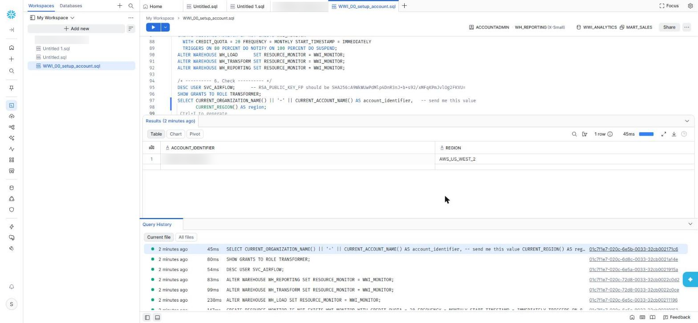
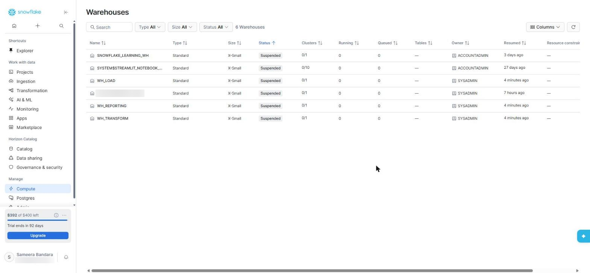
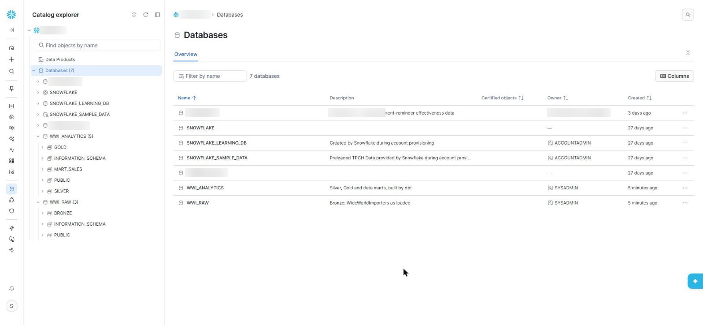
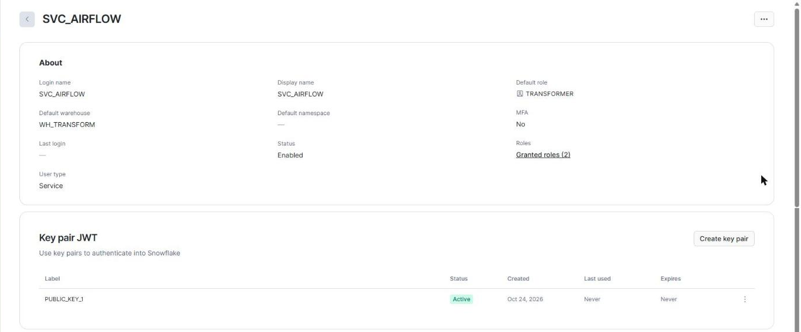

Chapter 4 · Foundations
Setting Up Snowflake
Everything the platform needs in Snowflake is created by one script that you run once in a Snowsight worksheet. It separates compute from storage, gives each job its own role, creates a service user that logs in with a key instead of a password, and caps spending. Your own administrator login is used only for this one run.

Compute: one warehouse per job
In Snowflake, compute (a virtual warehouse) is separate from storage, and you pay per second while a warehouse runs. Three extra-small warehouses keep the jobs apart, so a heavy report can never slow the nightly load, and each one suspends itself after 60 idle seconds:
USE ROLE SYSADMIN;
CREATE WAREHOUSE IF NOT EXISTS WH_LOAD WAREHOUSE_SIZE = XSMALL AUTO_SUSPEND = 60 AUTO_RESUME = TRUE INITIALLY_SUSPENDED = TRUE;
CREATE WAREHOUSE IF NOT EXISTS WH_TRANSFORM WAREHOUSE_SIZE = XSMALL AUTO_SUSPEND = 60 AUTO_RESUME = TRUE INITIALLY_SUSPENDED = TRUE;
CREATE WAREHOUSE IF NOT EXISTS WH_REPORTING WAREHOUSE_SIZE = XSMALL AUTO_SUSPEND = 60 AUTO_RESUME = TRUE INITIALLY_SUSPENDED = TRUE;
Storage: raw data apart from modelled data
CREATE DATABASE IF NOT EXISTS WWI_RAW; CREATE SCHEMA IF NOT EXISTS WWI_RAW.BRONZE;
CREATE DATABASE IF NOT EXISTS WWI_ANALYTICS; CREATE SCHEMA IF NOT EXISTS WWI_ANALYTICS.SILVER;
CREATE SCHEMA IF NOT EXISTS WWI_ANALYTICS.GOLD; CREATE SCHEMA IF NOT EXISTS WWI_ANALYTICS.MART_SALES;
-- gzipped, pipe-delimited CSV with every value quoted and \N for NULL
CREATE FILE FORMAT IF NOT EXISTS WWI_RAW.BRONZE.CSV_GZIP
TYPE = CSV COMPRESSION = GZIP FIELD_DELIMITER = '|' SKIP_HEADER = 1
FIELD_OPTIONALLY_ENCLOSED_BY = '"' NULL_IF = ('\\N') EMPTY_FIELD_AS_NULL = FALSE;
CREATE STAGE IF NOT EXISTS WWI_RAW.BRONZE.LANDING FILE_FORMAT = WWI_RAW.BRONZE.CSV_GZIP;Keeping raw data in its own database means the people and tools that model data can read Bronze but never change it. The internal stage is Snowflake-managed storage for the files on their way in, so there is no S3 bucket or IAM role to set up.

Access: three roles, each with one job
USE ROLE USERADMIN;
CREATE ROLE IF NOT EXISTS LOADER; CREATE ROLE IF NOT EXISTS TRANSFORMER; CREATE ROLE IF NOT EXISTS REPORTER;
USE ROLE SECURITYADMIN;
GRANT USAGE, CREATE TABLE ON SCHEMA WWI_RAW.BRONZE TO ROLE LOADER;
GRANT READ, WRITE ON STAGE WWI_RAW.BRONZE.LANDING TO ROLE LOADER;
GRANT SELECT ON FUTURE TABLES IN SCHEMA WWI_RAW.BRONZE TO ROLE TRANSFORMER;
GRANT OWNERSHIP ON SCHEMA WWI_ANALYTICS.GOLD TO ROLE TRANSFORMER COPY CURRENT GRANTS;
GRANT SELECT ON FUTURE TABLES IN SCHEMA WWI_ANALYTICS.MART_SALES TO ROLE REPORTER;Note the future grants: tables that don't exist yet, because the extract or dbt will create them later, are readable by the right role the moment they appear.
The service user: no password at all
CREATE USER IF NOT EXISTS SVC_AIRFLOW TYPE = SERVICE DEFAULT_ROLE = TRANSFORMER DEFAULT_WAREHOUSE = WH_TRANSFORM;
ALTER USER SVC_AIRFLOW SET RSA_PUBLIC_KEY = '<your rsa_key.pub body, without the BEGIN/END lines>'; -- from Chapter 2
GRANT ROLE LOADER TO USER SVC_AIRFLOW;
GRANT ROLE TRANSFORMER TO USER SVC_AIRFLOW;TYPE = SERVICE tells Snowflake this user is a program: it can't have a password or MFA and can't use the web interface. It can only log in with its key. Check that the key is the right one with DESC USER SVC_AIRFLOW: its RSA_PUBLIC_KEY_FP must equal the fingerprint you compute on the VM.

A cap on spending
USE ROLE ACCOUNTADMIN;
CREATE RESOURCE MONITOR IF NOT EXISTS WWI_MONITOR WITH CREDIT_QUOTA = 20 FREQUENCY = MONTHLY
START_TIMESTAMP = IMMEDIATELY TRIGGERS ON 80 PERCENT DO NOTIFY ON 100 PERCENT DO SUSPEND;
ALTER WAREHOUSE WH_LOAD SET RESOURCE_MONITOR = WWI_MONITOR; -- and the other twoTest the login from the VM
cd /opt/airflow/wwi_snowflake/dbt && dbt debug --profiles-dir . --target prod
# user: SVC_AIRFLOW · role: TRANSFORMER · warehouse: WH_TRANSFORM
# Connection test: [OK connection ok]Key takeaways
- One script creates everything; it is safe to re-run.
- Separate warehouses per job, all X-Small and auto-suspending.
- Three roles with future grants; the service user has a key pair and no password.
- A resource monitor stops runaway spending.